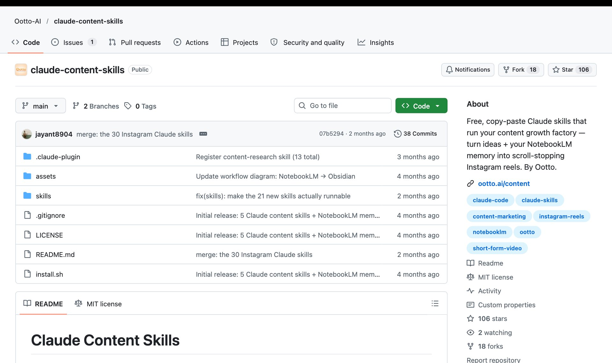

Целая команда по контенту внутри Claude. 52 навыка, бесплатно
Claude Content Skills: сценарии рилсов, карусели, ответы на комментарии, контент-план и поиск рилсов, которые залетели в твоей нише. Установка по шагам и первые задачи
Что это и зачем
Обычный Claude отвечает на то, что спросишь, и каждый раз начинает с нуля. Навык (скилл) - это готовая рабочая инструкция: Claude читает её и делает задачу по проверенной схеме, а не наугад
В этом наборе 52 таких навыка, и у каждого своя работа:
- Пишет сценариирилсов по хукам, которые уже залетали
- Собирает каруселиодна идея, десять слайдов, сохранение в конце
- Делает рилспо битам: текст, надписи на экране, что показать
- Отвечает на комментариии отправляет материал в личку
- Планируетконтент на две недели с форматами и хуками
- Ищет залетевшеев твоей нише и объясняет, почему оно сработало

Набор выложила компания Ootto, автор ролика, который я разбирала. Внутри есть ссылки на их платный сервис-автопилот, но для работы навыков он не нужен
Самый сильный навык - контент-ресёрч
Ты называешь аккаунт или нишу и даёшь ссылки на его рилсы с просмотрами, навык находит те, что выстрелили сильнее обычного, и разбирает почему: хук в первые две секунды, формат, темп, на чём держится внимание. На выходе - короткий план, что повторить у себя
Второй, ради которого стоит ставить, - Content Factory. Он запускает остальные навыки по порядку: нашёл залетевший формат → разобрал → написал хук и сценарий → собрал рилс → подпись → ответы на комментарии
Какой способ установки выбрать
Claude Code: две команды в чат
Подключи каталог навыков
Куда нажать. Открой Claude Code и вставь в поле чата:
/plugin marketplace add Ootto-AI/claude-content-skillsЧто увидишь. Сообщение, что каталог ootto-content-skills добавлен
Что это даёт. Claude Code теперь знает, откуда брать навыки и как их обновлять
Установи сами навыки
Куда нажать. Следующей строкой вставь:
/plugin install claude-content-skills@ootto-content-skillsЧто увидишь. Подтверждение, что набор claude-content-skills установлен
Что это даёт. Все 52 навыка лежат у тебя и подхватываются сами, когда задача подходит
Перезапусти Claude Code и проверь
Куда нажать. Закрой диалог и открой новый. В поле чата набери / и начни печатать content
Что увидишь. В подсказках появятся content-research, content-factory, content-calendar и другие
Что это даёт. Это подтверждение, что набор встал. Старый диалог про него не знает, поэтому новый обязателен
Через терминал, если первый не сработал
Скачай набор и запусти установщик
Куда нажать. Открой терминал (окно, где команды печатаются текстом) и вставь две строки по очереди:
git clone --depth 1 https://github.com/Ootto-AI/claude-content-skills.git bash claude-content-skills/install.shЧто увидишь. Строки installed ... по одной на каждый навык, в конце Done
Что это даёт. Навыки лежат в папке ~/.claude/skills/, оттуда их читает Claude Code. Дальше перезапуск, как в способе 1
Работает на Mac и Linux. На Windows ставь способом 1, он одинаковый для всех систем
Без Claude Code, в обычном claude.ai
Открой нужный навык на GitHub
Куда нажать. На странице набора открой папку skills, затем папку навыка, например content-research, и в ней файл SKILL.md
Что увидишь. Текст инструкции на английском
Что это даёт. Каждый навык - это обычный текст, его можно просто скопировать
Вставь в чат вместе со своей задачей
Куда нажать. Скопируй текст целиком, вставь в новый чат на claude.ai и ниже допиши задачу
Что увидишь. Claude отработает по этой инструкции так же, как в Claude Code
Что это даёт. Можно попробовать любой навык за минуту, ничего не устанавливая. Чтобы не копировать каждый раз, сохрани текст в инструкции проекта (Project) на claude.ai
Первые три задачи
Навыки написаны на английском и отвечают на английском, если не попросить иначе. Поэтому в конце каждой задачи пиши «отвечай по-русски»
Если команда с косой чертой не находится, набери / и начни печатать название: Claude Code подскажет полное имя навыка вместе с названием набора
Что внутри: карта 52 навыков
Изучить, что работает
разбор чужого рилса по кадрам, тренды ниши, разбор конкурента, идеи из комментариев аудитории, аудит своего контента, контент-ресёрч
Создать
хуки, сценарии, сборка рилса по битам, A/B тест хуков, карусели, серии сторис, обложка, надписи на экране, список кадров для съёмки, бриф для UGC-креатора
Выложить и продать
подпись и хэштеги, переупаковка длинного контента в рилсы, контент-план, ответы на комментарии, призыв к действию, скрипт переписки в личке, время публикации, адаптация под другие площадки
Расти
рубрики, опорные темы, шапка профиля, коллаборации, понятный отчёт по цифрам, поиск ключевых слов и хэштегов
Остальное
память Claude между сессиями, сбор данных из интернета, реклама, запуски, партнёрства с блогерами, LinkedIn и X
Грабли, о которые спотыкаются
- Ответы на английском. Навыки написаны по-английски. Добавляй «отвечай по-русски» в каждую задачу
- Новый диалог после установки. Старый диалог Claude Code про новые навыки не знает
- Сбор данных из интернета ставится отдельно. Навык
agent-reachпри первом запуске попросит установить свою программу. Остальным навыкам она не нужна - Навык не знает тебя. Он пишет по общей схеме. Чтобы тексты звучали твоим голосом, дай ему примеры своих постов и описание аудитории
Где смотреть подробности
github.com/Ootto-AI/claude-content-skills- сам набор: все навыки, описание каждого, установка
Что происходит с блогом, когда контент делает система
У меня похожий завод собран под мой блог: ролики, тексты, обложки и выдача материалов идут по моим правилам. Вот что он даёт за то же время


Три рилса по миллиону и больше. Без рекламы и без команды: производство занимает минуты, время уходит на смысл
52 навыка - это детали, а не завод
Я одна, в декрете, без команды собрала свой контент-завод сама. Готовый набор - хороший старт, но навыки в нём работают по отдельности и пишут по общей схеме для англоязычного блога. Какой контент нужен именно твоей аудитории, как он превращается в заявки и как соединить поиск идей, съёмку, выдачу материалов и продажи в одну машину, набор не решит
Поставить набор - десять минут. Собрать систему, где контент сам приводит людей в личку и в продажи, - другая работа, и начинается она с разбора твоего блога и твоих продуктов
На консультации разбираю, как выстроить такой контент-завод у тебя: от поиска идей до заявки
Напиши слово
мне в личку Telegram
НаписатьМои каналы и страницы